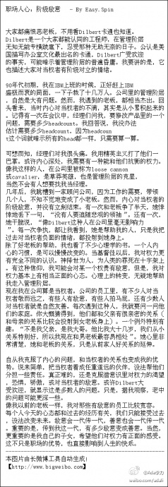

周老师的经历好励志呀.@出版人周筠:我37岁怀了女儿，然后计划离开工作了15年的大学出版社。同办公室长我10岁的同事忧伤地看着我说，这个年龄了，谁还会要你。38岁生下女儿后3个月，开始了独立创建武汉博文视点的路程。前不久在火车上又巧遇这位同事，她依然担忧地看着我，说：你不该把档案都拿走啊，档案留在学校里，你老了就有靠啊！
为孩子起见, 父母要和孩子建立起良好关系. 这篇文章中描述的Dilbert心态很常见. "有少数人对当权者就是自然友善。每次遇到这种人，我就要问一问他们的家庭。你大概猜得到，他们都和父亲有很亲密的关系（和母亲的关系比较会投射到女老板身上）。" 职场人心：阶级敌意 - By Easy.Spin (全文见图) 
"左宗棠的识人之术，可以归纳成“器量识才”四个字。找个人做基层工作，注意力在于“才”：能不能做这件事。提拔资深干部，注意力在于“识”：有没有远见和判断力。任用经理人员，主要注意力在于“量”：能不能领导这个团队。聘请执行经理，注意力在于“器”：这个人值不值得信任。" - By Easy.Spin
思维方式的形成, 很多可以归到家庭的影响上. 我父亲是个老粪青(这样说, 真是不敬), 我曾经怕过他, 恨过他, 喜欢过他, 讨好过他, 也挑衅过他.... 现在是把他当可爱的老人, 知道怎么哄他开心. 我继承了父亲的部分粪青传统, 但也极力想撇清这种影响.
姣姣在周六的"快乐营地"活动中和另外两个小朋友当主持人, hold不住场子. 我问她是否需要大人帮小主持人们维持秩序, 姣姣说需要大人吼. 她还马上举了个例子, 她们班的外教不会说中文, 但是会吼一句中文:"安静!". 可是"快乐营地"的初衷就是让孩子能从内心建立秩序感, 而不是要靠成人的"淫威".
姣姣比较怕明俊, 明俊对学习要求还是蛮严的. 但她也有小技巧支使爸爸. 今天晚饭时, 她安排饭后妈妈帮她检查作业, 爸爸刷碗. 爸爸当然不同意, 姣姣就赖嬉嬉地朝明俊脸上凑过去, "ben 儿一个, ben 儿一个", 在明俊脸上啄了好几口. 明俊就满面笑容地同意了.